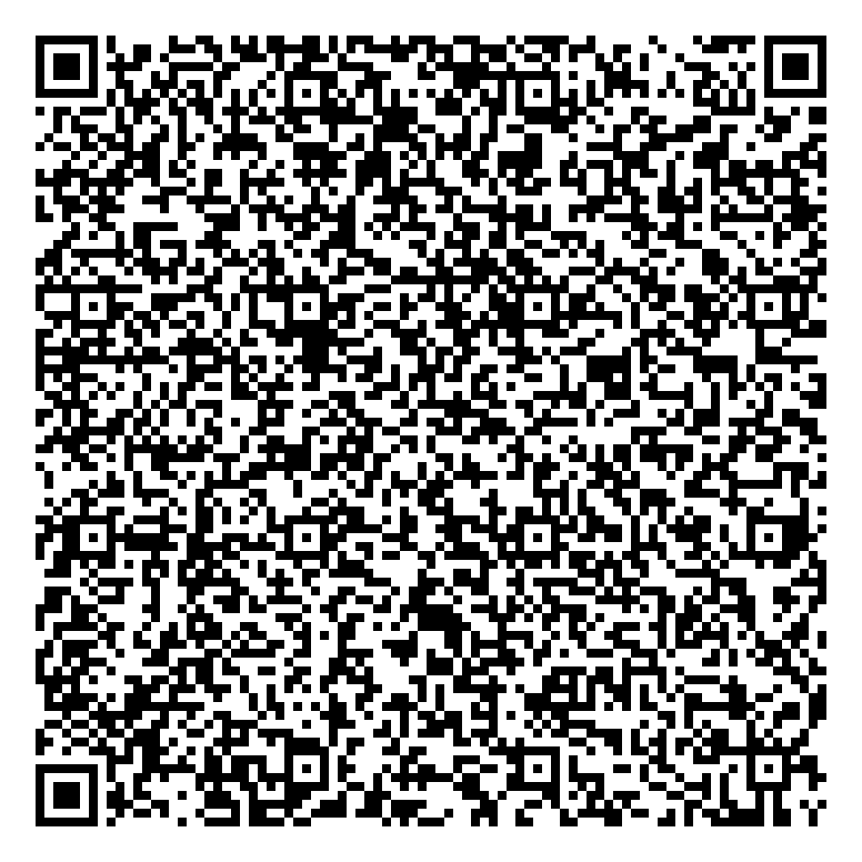

Dexter Business Phone
Fully managed Device Owner provisioning QR for the permanent Dexter Business Phone release.

- Only use after confirming the permanent APK installs successfully.
- Factory reset the Meizu.
- On the first welcome screen, tap the same blank area 6 times to start QR provisioning.
- Connect the phone to Wi-Fi when prompted.
- Scan this QR.
- Allow Dexter Business Phone to finish setup. Do not add a personal Google account during provisioning.
Package: uk.co.dextersspot.dexterai
Admin: .DexterDeviceAdminReceiver
Version code: 3
APK SHA-256: 04606731800901c8f5a9ab5546593f3cb5615ace7f99f5123797a0d4c3d19b21